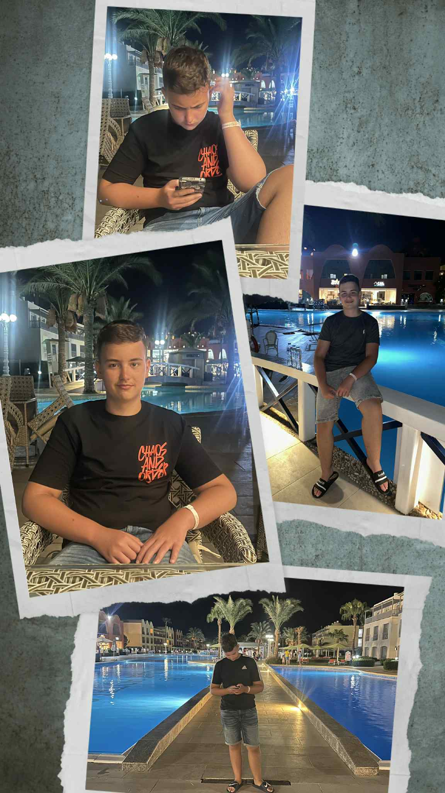

Szabó Benett vagyok, 14 éves. Hernádnémetiben lakom a családommal egy szép kertes házban. A szüleim helyben dolgoznak, a húgom az általános iskolában 6. osztályos. Szabadidőmben sokat játszom a gépemen, de szívesen töltöm az időmet a családommal is. Nyáron sok közös élményt szereztünk együtt.
Általános iskolai tanulmányaimat a Hernádnémeti Református Iskolában végeztem. Jelenleg a Miskolci SZC Kandó Kálmán Informatikai Technikum 9.C osztályos tanulója vagyok, informatika és távközlés ágazaton. Érdekel az informatika és a digitális világ, és úgy gondoltam, hogy ez a iskola megfelelő alapokat nyújt majd nekem ahhoz, hogy megtaláljam azt a szakmát, ami a leginkább közel áll hozzám. A jövőbeli terveim között szerepel az angol középfokú nyelvizsga, a jogosítvány, az érettségi és a szakmai vizsga megszerzése.
<3>Kollázs képem
